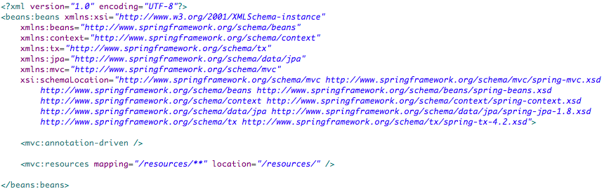
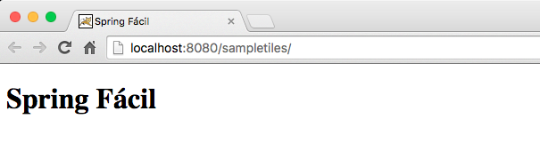

Spring Fácil
Spring Fácil
SETUP - Criando e Configurando o Projeto
Criando o Projeto utilizando Maven
File > New > Other
- Selecione "Create a simple project"
- Next

- Group id = com.eprogramar
- Artifact id = springfacil
- Version = 0.0.1-SNAPSHOT
- Packaging = war
- Finish
Configurando Properties, Dependencias e Build
/pom.xmlProperties
Dependencias
Build
Configurando Spring Context com Estrutura Básica
dentro do diretório WEB-INF criar o arquivo: applicationContext.xmlapplicationContext.xml
Criar web.xml
Criar a estrutura de pastas: /src/main/webapp/WEB-INF/dentro do diretório WEB-INF criar o arquivo: web.xml
web.xml
Criar o arquivo index.jsp
dentro do diretório webapp criar o arquivo: index.jspindex.jsp
Executando o Projeto
Resultado no Browser